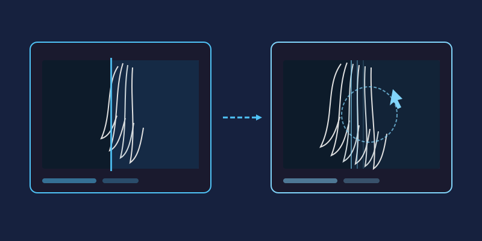

Whether you're building product listings, designing thumbnails, or making a meme, cutting a subject out of its background is one of the most useful editing skills you can have. Here's how to do it quickly—and how to fix the results when automation gets it wrong.
Step 1: Start With Automatic Removal
Modern online editors detect subjects automatically. In miniPhotoShop, open your image and use the background removal feature—the tool analyzes contrast and edges, then isolates your subject in seconds. For photos with clear subjects against fairly uniform backgrounds (studio shots, product photos), this alone might finish the job.
Step 2: Refine Manually Where Needed
Automation struggles with busy scenes, similar colors, and fine detail. That's where manual touch-up comes in:
- Lasso or marquee selection: Roughly select areas the tool missed, then delete them.
- Magic wand: Click leftover patches of the old background; adjust tolerance until the selection grabs the whole patch.
- Eraser brush: Zoom in and erase stubborn slivers along edges at 100% zoom or higher.
- Undo freely: Every editor has Ctrl+Z. Use it without guilt.
Step 3: Tackle Hair and Fur Like a Pro
Hair is the classic nightmare—thousands of tiny strands against a complex backdrop. Instead of trying to erase strand by strand:
- Duplicate your layer before touching anything.
- Select the subject generously, including some background between strands.
- Apply a small amount of feathering (1–3 pixels) to soften the selection edge.
- On high-contrast photos, use the Background Eraser tool, which samples and removes only colors similar to where you click.
- If faint fringing remains, paint over it with a soft brush set to low opacity, sampling nearby hair color.
Perfection isn't the goal—at normal viewing size, slightly soft hair edges look completely natural.

Step 4: Check Your Work
Transparent areas are hard to judge against a white canvas. Temporarily place a bright, contrasting layer behind your subject (bright green works great). Every missed pixel and halo will jump out immediately. Fix what you see, then delete the test layer.
Step 5: Export as PNG
This step matters more than people think. Formats like JPG don't support transparency—your carefully removed background will come back as solid white. Always export as PNG, which preserves transparency perfectly. If you need a new background instead, simply add your replacement image on a layer beneath the cutout.
When Automatic Removal Works—and When It Fails
Automatic background removal deserves its reputation: for a studio portrait or a product on a clean table, it genuinely finishes in seconds. The tool looks for contrast and continuous edges, so whenever your subject is sharp, well lit, and clearly a different color from what's behind it, you can trust it.
Trouble starts when those assumptions break. Busy scenes confuse edge detection—tree branches threading through hair, chain-link fences, crowds. Similar colors are the other classic killer: blonde hair against a beige wall or a white shirt against an overcast sky gives the algorithm nothing to lock onto. Low light and motion blur make things worse by softening exactly the edges the tool needs. In those cases, don't fight the automatic result pixel by pixel. Run the automatic pass first to get 80% of the way there, then switch to the lasso, magic wand, and eraser for the last stretch. That combination is almost always faster than pure manual work.
How to Choose Source Photos That Are Easy to Cut Out
The fastest edit is the one you barely have to make, and that starts before you ever open the editor. When you can choose between photos, pick the one that will be easy to isolate:
- Even lighting: Harsh shadows behind a subject read as part of the subject. Soft, diffused light keeps the silhouette clean.
- Tack-sharp edges: A crisp outline gives every tool something to grab. Blurry edges force guesswork and feathering.
- Strong color contrast: A dark subject on a light background (or vice versa) cuts cleanly; a subject wearing the same color as the wall does not.
- A simple backdrop: Plain walls, skies, and seamless paper beat cluttered rooms every time.
If you're shooting the photo yourself, step two paces to the left so the subject isn't standing against a matching color. Ten seconds of repositioning saves ten minutes of erasing.
Common Mistakes That Ruin a Background Removal
Even a careful cutout can be undone by a handful of predictable errors. Watch for these:
- Halo and fringing: A thin leftover border of the old background—often white or green—glows around your subject once it sits on a new background. Fix it by zooming in and erasing one or two pixels inward along the edge, or painting over the fringe with a soft brush sampled from the subject's own colors.
- Over-erasing: Dragging the eraser carelessly eats into shoulders, fingers, and hairlines. Work on a duplicated layer so mistakes never touch the original pixels.
- Skipping feathering: A selection with zero feather produces jagged staircase edges that scream "cut out." A 1–2 pixel feather smooths the transition invisibly.
- Exporting as JPG: JPG has no transparency channel. Your cutout will come back with a solid white box around it. Export as PNG instead—miniPhotoShop preserves the alpha channel perfectly.
- Judging at thumbnail size: Flaws hide until someone views the image large. Check at 100% zoom before you call it done.
Background Removal for E-Commerce Product Photos
If you sell online, background removal isn't optional polish—it's usually a requirement. Major marketplaces expect product images on a pure white background, often specified as true white, with the product filling most of the frame. A cutout makes this trivial: remove the original background, place a solid white layer beneath your subject, and export as PNG or flatten to JPG at that point.
Consistency matters just as much as compliance. A catalog where every product floats at a different angle under different lighting looks amateur even if each image passes the rules. Cut everything out, then rebuild the scenes identically: same canvas size, same shadow direction, same margins. Speaking of shadows—decide on one approach and stick to it. Either no shadow at all, or a soft, subtle drop shadow applied uniformly, so products appear shot in the same "studio." Because miniPhotoShop runs entirely in your browser, you can process a whole batch of listings in one sitting without installing anything.
Frequently Asked Questions
Does removing the background reduce my image quality?
No. Cutting away pixels leaves the remaining ones untouched, and PNG is lossless. Quality only suffers if you resize aggressively afterward or repeatedly re-save as JPG.
Why did my transparent image turn white after uploading somewhere?
You almost certainly exported as JPG, which flattens transparency to white (or black). Re-export as PNG—if a site doesn't support transparency, it will show its own background behind your PNG, which is exactly what you want.
I erased part of my subject by accident. Can I get it back?
If you duplicated the layer first, just delete the damaged copy and start over on the original. Otherwise, Ctrl+Z rewinds recent steps, and working non-destructively from now on costs one click.
What tolerance should I use with the magic wand?
Start low, around 20–30, and increase only until the selection covers the patch you clicked without spilling into your subject. On gradients or noisy backgrounds, several small clicks beat one giant selection.
Can I do all of this on a phone or tablet?
Yes. miniPhotoShop works in any modern mobile browser, so the same tools—background removal, wand, feathering, PNG export—are available without installing an app.
Final Tip
The better your source photo, the easier everything becomes. Sharp focus, good lighting, and decent contrast between subject and background can turn a five-minute job into a thirty-second one. Now go give those product photos the clean, professional look they deserve.